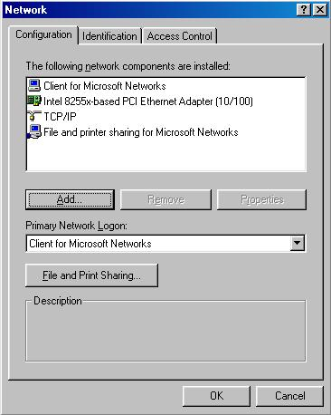

Kurt Seifried, [email protected]
So you are using Windows 98, and want to secure your machine, but aren't quite sure where to start. Well you have come to the right place. This guide will lead you through a 4 step security process, the first step is to install anti-virus software, the second step is disabling services you do not need on your computer (but were probably enabled by the manufacturer), step three consists of updating your windows software, and finally the last step is installing a personal firewall. Throughout this guide I use free products as examples for the simple reason that they are the quickest to get ahold of and install. You are encouraged by all means to purchase commercial products, they typically provide a much higher level of support then free products, and are sometimes easier to work with in the long run. However in the scheme of things free security software (such as an anti-virus software package) is much better then nothing. Unfortunately during the process of securing your machine you will have to reboot several times (this is a "feature" of windows, most changes require a reboot). I suggest you either bookmark this page, or save it to your harddisk.
Unfortunately there are no longer many free anti-virus software packages for Windows. While virtually every anti virus maker offers a free trial version these typically expire after 30 days, leaving you unprotected. I strongly advise you purchase anti virus software, especially if you use email (which is where a majority of infections come from). New viruses like SirCam are especially bad, they go through your computer looking for files and email addresses and then send copies of your files to random email recipients. I personally have received several hundred sensitive documents from numerous people, ranging from tax returns to personal correspondence. Fortunately there are still several free solutions, AVG and Housecall.
AVG is available from: http://www.grisoft.com/html/us_downl.cfm to all non Europeans (although UK residents can get it for free). There is no support, however the package does provide real time support and cleaning. If you are not in Europe and unable to purchase anti-virus software I strongly recommend you download and install this software.
Housecall is from Trend Micro, available at: http://housecall.antivirus.com. It provides an online web based software package that can scan and clean your system of viruses. Unfortunately because it is web based you must visit the web page to run it, and it does not offer real time protection. In other words you could easily receive a virus via email that would be able to delete files or otherwise damage your system, and Housecall would not protect you.
If you wish to purchase anti-virus software there are several large companies that provide solid anti-virus solutions:
After installation of your anti-virus software you will typically need to reboot, unfortunately you are not yet finished, as you will probably also need to update the anti-virus software and reboot once more. This step is critical, there are several nasty viruses currently circulating and unless you update your anti-virus software you will not be protected.
There are several services in windows often enabled by manufacturers that most home users do not need. Part of the functionality that windows offers is network file sharing and printer support. If you only have one machine chances are you do not need these features. The other major feature is Windows network login. This login screen prompts you for a username and password, this username and password DO NOT restrict access to the machine however. The username and password are simply cached so that if you were to try and access a network file server your machine would try these credentials first, and if they were valid you would not be prompted for them (saving you from having to type in your username and password each time you access a file). Enabling windows printer and file sharing can allow an attacker to gain access to your machine, and the same goes for Windows network client. Installing these components and enabling them is the default in Windows, so unless you specifically disable or remove them they will be present. With these software component installed a remote attacker can find out a lot about your computer. By querying your machine remotely they can learn your login name and your workgroup name and the hardware address of your computer (which can give them enough information to know what brand of computer you own!):
nbtstat -A 10.3.0.1
NetBIOS Remote Machine Name Table Name Type Status --------------------------------------------- WORKSTATION0 <00> UNIQUE Registered WORKGROUP1 <00> GROUP Registered WORKSTATION0 <03> UNIQUE Registered MAC Address = 00-60-82-F8-F4-93
Workstation0 is the name of the workstation, and Workgroup1 is the name of the workgroup. With Windows file and print sharing enabled the remote attacker can find out even more information:
NetBIOS Remote Machine Name Table Name Type Status --------------------------------------------- WORKSTATION0 <00> UNIQUE Registered WORKGROUP1 <00> GROUP Registered WORKSTATION0 <03> UNIQUE Registered WORKSTATION0 <20> UNIQUE Registered WORKGROUP1 <1E> GROUP Registered USERNAME <03> UNIQUE Registered WORKSTATION0 <1F> UNIQUE Registered MAC Address = 00-00-D2-E8-F2-53
They now have your username, and can connect to any shared files or printers you posses. If you do need to share out files and printers you should install a personal firewall so you can restrict who has access.
Click on "Start" > "Settings" > "Control Panel" and then choose "Network":

Then select "File and printer sharing for Microsoft Networks" and click remove, and then do the same for "Client for Microsoft Networks".
This is extremely easy in Windows 98. Simple click on the "Windows Update" link on your menu or type in the following URL in Internet Explorer:
http://windowsupdate.microsoft.com/
From there a small applet loads and does an inventory of what you have installed, and which version, then the items you need are displayed on a webpage, in descending order of importance (Critical security fixes first). You then click on the item, and download and install it, some fixes have to be installed on their own, and some you can install several at a time.
You can also go to the above corporate URL if you wish to download the fixes and save them which is extremely useful if you have more then one Windows 98 machine. The URL for this is:
http://corporate.windowsupdate.microsoft.com/en/default.asp
You should visit these sites at least one a month, or to automate the task simply install the "Windows Critical Update Notification" component (available on the update page under "Picks of the month").
If you do need to offer services such as file and print sharing to other machines then a personal firewall can allow you to restrict who is able to connect. As well any software you install that provides network services or tries to use them will be proactively blocked, so you can easily block spyware packages from sending back information and so on. My personal favorite for this is ZoneAlarm, it is freely available for home use, very effective and very easy to configure. You can get it from: http://wcarchive.cdrom.com/pub/flood/zonalm26.exe or http://www.zonelabs.com/zap26_za_grid.html.
Last updated 4/10/2001
Copyright Kurt Seifried 2001